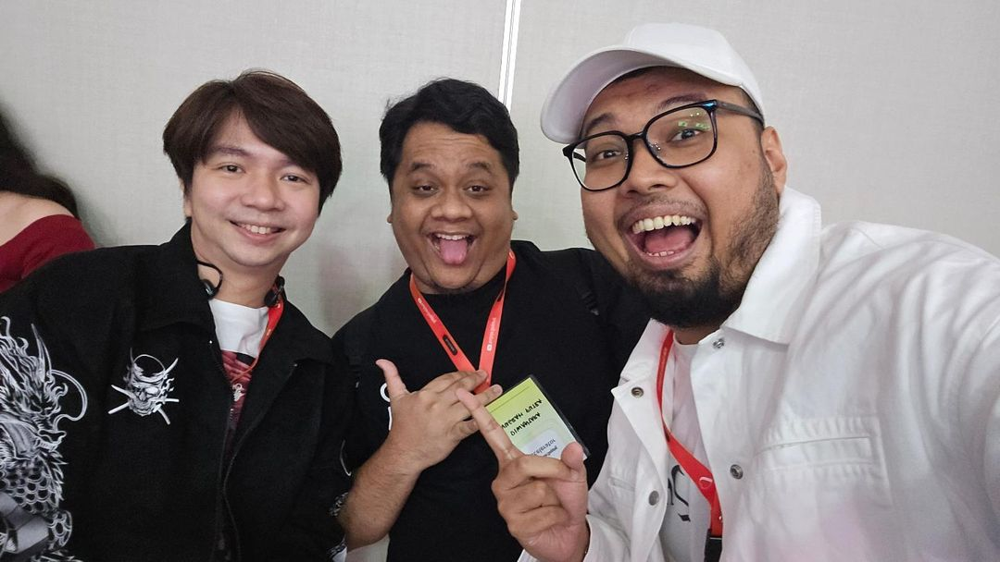

Tara Arts dan Gema Show Indo adalah dua kanal YouTube populer asal
Indonesia yang dikenal di komunitas gamer dan kreator konten.
Keduanya memiliki gaya yang unik dan ciri khas sendiri dalam
menyajikan konten hiburan dan edukasi kepada pengikut mereka.
Awal Mula Tara Arts
Siapa yang tidak kenal dengan youtuber sentolop, Tara Arts Game
Indonesia? Bernama lengkap Diwantara Putra Anugrah, ia memang
menjadi salah satu youtuber yang layak kamu tonton dikala sedang
bosan dan butuh hiburan.
Siapa sangka, sang pemilik kanal Tara Arts Game Indonesia dulunya
pernah bercita-cita sebagai pesulap . Ia pun awal membuat YouTube di
tahun 2009 bernama “Tara Arts Magic” dengan tujuan mempromosikan
toko sulapnya kepada publik hingga salah seorang perwakilan dari
YouTube di Los Angeles, David Spates mengajak dirinya untuk menjadi
mitra langsung dan menjadi pundi-pundi awal penghasilan dari kanal
Tara Arts Magic.
Bersamaan dengan dirinya yang membuat kanal Tara Arts Magic, Tara
juga membuat satu kanal lagi yang diberi nama Tara Arts Movie. Dalam
kanal ini, Tara mengunggah video yang berhubungan dengan visual
efek. Dalam sesi talk show di acara Kick Andy, ia mengatakan bahwa
video dengan judul “Bearminator” merupakan karya pertama yang ia
buat bersama dengan Gema (adik Tara) dan salah satu Sepupunya. Video
ini mereka buat hanya dengan mengandalkan sebuah kamera handycam
jadul milik ibunya.
Sama halnya dengan Tara Arts Magic, kanal Tara Arts Movie pun
mendapatkan sebuah apresiasi yang sangat luar biasa dari salah satu
produser film Hollywood, Steven Allan Spielberg. Kecintaan Tara dan
Gema terhadap dinosaurus membuat mereka menciptakan berbagai video
visual efek yang berkaitan dengan Jurassic Park. Mereka pun
membagikan video-video tersebut ke berbagai forum yang akhirnya
membuat sang Director dari film Jurassic Park, Steven Spielberg
menghubunginya.
Pendidikan Tara
Meski punya segudang keahlian yang luar biasa, nyatanya Tara
hanyalah lulusan SMA. Pada tahun 2010 ia masuk ke salah satu
universitas ternama yang ada di Jakarta, yakni Universitas Negeri
Jakarta. Lalu di tahun 2011, ia tidak menyangka bahwa David Spates
dan Steven Spielberg datang untuk mengapresiasi karya-karyanya. Dua
tawaran ini membuat Tara memutuskan untuk berhenti kuliah dan mulai
serius berkarya di dunia YouTube.
Mulai mendapatkan penghasilan dari YouTube, Tara pun memamerkan
keuntungannya ini ke Gema (adiknya). Gema yang begitu antusias
dengan kesibukan baru sang Kakak akhirnya ditawari untuk bekerja
sama dengannya. Tawaran ini pun disetujui oleh Gema dan membuatnya
tidak melanjutkan ke pendidikan yang lebih tinggi (kuliah). Tepat di
tahun 2012, Gema akhirnya memiliki kanalnya sendiri yang diberi nama
“Gema Show” yang berisikan berbagai video hasil editan After Effect
serta walkthrough seputar game.
Terbentuknya Kanal Tara Arts Game Indonesia
Selain cinta dengan dunia perfilman, Tara pun gemar sekali bermain
game. Di tahun 2011, ia mendirikan sebuah kanal bernama Tara Arts
Game yang berisikan berbagai walkthrough game. Game pertama yang ia
unggah dalam kanal YouTube-nya adalah adalah Driver 2 dengan judul
“DRIVER 2 Walkthrough - 1 : Surveillance Tip Off”. Lalu dua tahun
berselang, tepatnya di tahun 2013, Tara meresmikan kanal barunya
yang diberi nama Tara Arts Game Indonesia.
Apa yang membedakan Tara Arts Game dengan Tara Arts Game Indonesia?
Dalam kanal Tara Arts Game Indonesia, Tara menghadirkan percakapan
yang penuh dengan bahasa Indonesia, berbeda dengan Tara Arts Game
yang pada dasarnya mengincar pasar lebih luas (menggunakan bahasa
Inggris). Tidak hanya berbentuk bahasa Indonesia, dalam kanal ini
Tara juga menghadirkan berbagai momen konyol, sebut saja konten
populer miliknya saat bermain GTA Online yang sentolop (sebutan lucu
atau kocak).
Saat ini Tara Arts Game Indonesia sudah memiliki lebih dari 1 juta
subscriber dan menjadi kanal utama dari Tara dalam mengunggah
berbagai informasi seputar game; mulai dari gameplay, momen lucu,
hingga berita-berita game terhangat.
Terbentuknya Kanal Gema Show Indo
Gema Show Indo juga merupakan kanal yang diinisiasi oleh adiknya
Tara, yakni Gema Cita Andika, yang berfokus pada konten gameplay dan
dunia per-gaming-an. Berbeda dengan Gema Show, Gema Show Indo lebih
terarah menghadirkan percakapan yang penuh dengan bahasa Indonesia.
Kanal ini jugalebih fokus pada hiburan seputar game dengan komentar
yang lucu dan gaya bermain yang santai. Gema menampilkan eksplorasi
dan modifikasi game yang unik, memberi inspirasi kepada penontonnya
untuk mencoba pendekatan berbeda dalam bermain.
Gema dikenal dengan gaya bicara yang cepat dan interaktif, yang
membuat penonton merasa seakan-akan sedang bermain bersama.
Video-video yang diproduksi oleh Gema Show Indo sering kali
mencerminkan pemikiran kreatif dan inovatif Gema dalam menciptakan
konten yang seru dan menghibur.
Pengaruh Tara Arts dan Gema Show Indo

Kanal Tara Arts dan Gema Show Indo telah menginspirasi banyak anak
muda di Indonesia untuk berkreasi di platform digital, baik dalam
bidang gaming, tutorial, maupun produksi film pendek. Keduanya juga
menunjukkan bahwa dengan kreativitas dan dedikasi, seseorang dapat
meraih kesuksesan di YouTube.